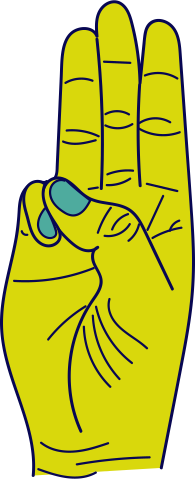

Making a choice isn't always easy.
Even for the small decisions, that don't really influence your life.
These tiny choices can still consume more time than you want but in DICE, we make it more convenient.
Everyday decisions will be made by rolling your dice.
What are you going to have for breakfast?
What are you going to wear today?
It's all up to luck and faith.
Life decisions are even harder to make.
Where are you going to live?
Are you going to say 'yes' to this job opportunity?
It isn't fair to let faith and luck decide these important choices, so it is up to you to determine your top 6 options.
If you can't decide within 10 seconds, you'll roll your dice that ultimately makes the decision.
The choice that corresponds with the number is the one you have to go with, no take-backs.
Thanks to DICE, you'll never make impulsive decisions.
You can set aside rational and emotional thinking because the dice decides for you. This reduces stress so you have a smaller chance of suffering from mental issues.
We help you when deciding on what you should do to have a productive and positive day. For instance, the activities you'll be doing that day or whether you'll cook some dinner or go out to eat. That way, DICE gives you more time to think about worldwide issues such as politics and global warming. DICE doesn't interfere with your vision or opinion on these subjects.
DICE doesn't decide over your opinion but makes a choice in your behaviour. You will experience new activities and push your limits. Just Roll Your Choice!
DICE in three steps
Step 01
Hesitation to make a choice,
with a little bit of doubt
Step 02
Determine your top choices,
max. 6 options

Step 03
ROLL YOUR CHOICE
DICE is a community where there's no room for stress and worries. You can enjoy life without any negativity because we turn this into positive thoughts. Together we can achieve gratefulness in our lives.
Everyone possesses his/ her own dice. You can personalize it to your wishes, for example other colors or patterns... This is all your decision. You have your dice with you at all times because you constantly have to make choices. When in doubt, just roll it and it will decide for you.
You'll experience the power that the dice gives you. You feel much more self-assured with the dice in your pocket. It feels like something is protecting you from all bad in the world. Of course, there will always be negativity around you but you decide for yourself to turn this into positivity. If you wouldn't do this, there wouldn't be any hope for a better future.